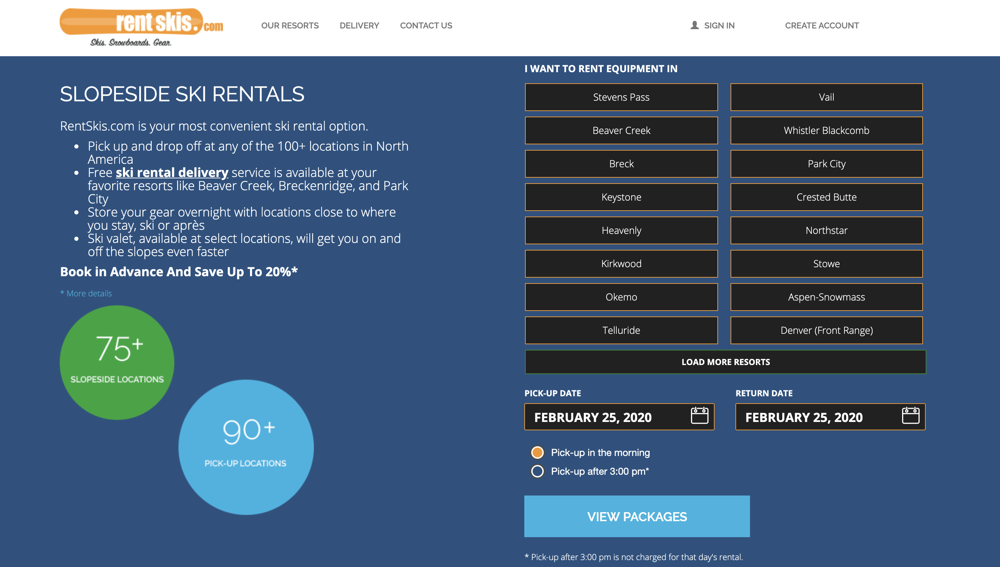
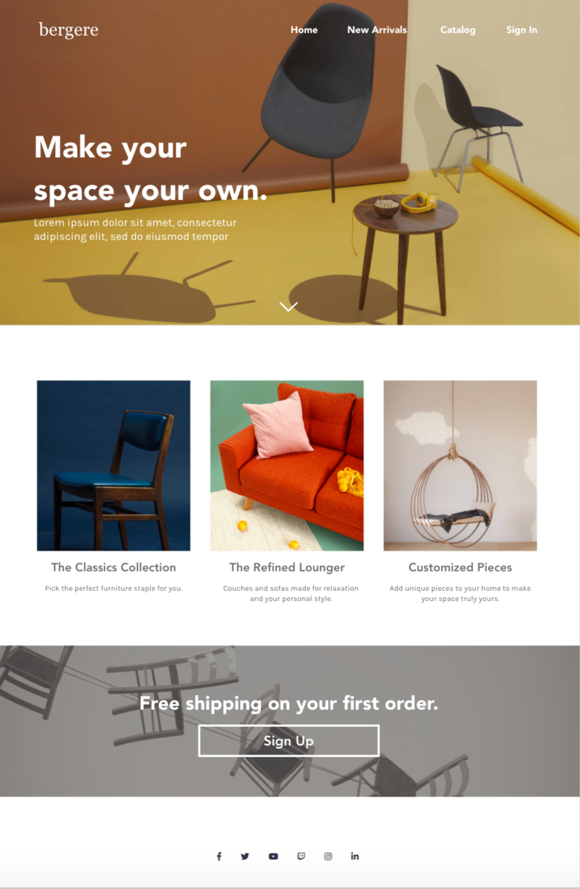

-
Trying to improve upon the current site, create a low-fidelity wireframe of your redesigned landing page (i.e. just what's pictured above) using any tool of your choice. (use the 'img' tag!)

-
Using what you've learned from lecture and design articles, create a high-fidelity mockup of your redesigned homepage using Adobe XD, Figma, or Sketch. A great resource for free-to-use images for your mockup is unsplash.

Rentskis.com's current homepage looks something like this:
-
Write 2-3 sentences about what problems your redesign addressed, and how it solved them.
I added a picture to have some visual appealing to the website. To make the renting more simple, I deteled the intro about the company and only left the places to click where the user will interact. Lastly, I changed color scheme in the webiste to match with the comapny title color
-
Write 2-3 sentences about what design principles you used in creating your redesign.
I want to make it simple so it's not as busy to look at (lots of white space). I made the webiste color to develp to make the color more eaisly to look at
NOTE: Make sure to include the mockup images in the website and don't just put it in your assets folder!
Your mockups should look something like this (the mockup from lab):
